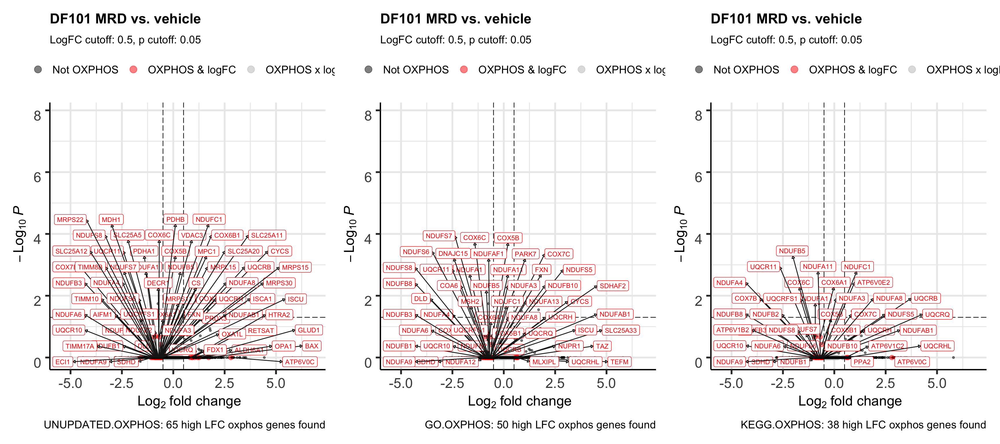
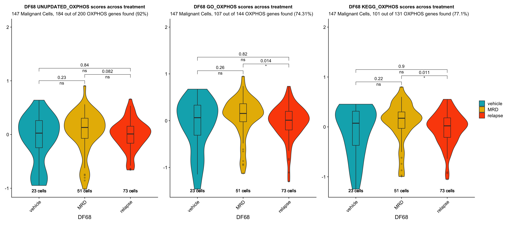

Izar 2020 PDX (Cohort 3) DE Analysis
Jesslyn Goh and Mike Cuoco
7/20/2020
Last updated: 2020-08-04
Checks: 7 0
Knit directory: jesslyn_ovca/analysis/
This reproducible R Markdown analysis was created with workflowr (version 1.6.2). The Checks tab describes the reproducibility checks that were applied when the results were created. The Past versions tab lists the development history.
Great! Since the R Markdown file has been committed to the Git repository, you know the exact version of the code that produced these results.
Great job! The global environment was empty. Objects defined in the global environment can affect the analysis in your R Markdown file in unknown ways. For reproduciblity it’s best to always run the code in an empty environment.
The command set.seed(20200713) was run prior to running the code in the R Markdown file. Setting a seed ensures that any results that rely on randomness, e.g. subsampling or permutations, are reproducible.
Great job! Recording the operating system, R version, and package versions is critical for reproducibility.
Nice! There were no cached chunks for this analysis, so you can be confident that you successfully produced the results during this run.
Great job! Using relative paths to the files within your workflowr project makes it easier to run your code on other machines.
Great! You are using Git for version control. Tracking code development and connecting the code version to the results is critical for reproducibility.
The results in this page were generated with repository version 6d23590. See the Past versions tab to see a history of the changes made to the R Markdown and HTML files.
Note that you need to be careful to ensure that all relevant files for the analysis have been committed to Git prior to generating the results (you can use wflow_publish or wflow_git_commit). workflowr only checks the R Markdown file, but you know if there are other scripts or data files that it depends on. Below is the status of the Git repository when the results were generated:
Ignored files:
Ignored: .DS_Store
Ignored: .Rhistory
Ignored: .Rproj.user/
Ignored: analysis/.DS_Store
Ignored: code/.DS_Store
Ignored: data/.DS_Store
Ignored: data/HTAPP/
Ignored: data/Izar_2020/
Ignored: data/gene_lists/.DS_Store
Ignored: data/gene_lists/extra/.DS_Store
Ignored: jesslyn_plots/
Ignored: mike_plots/
Ignored: old/.DS_Store
Ignored: old/edited/.DS_Store
Ignored: renv/.DS_Store
Ignored: renv/library/
Ignored: renv/python/
Ignored: renv/staging/
Ignored: vignettes/
Unstaged changes:
Modified: old/edited/02_Izar2020_SS2_Load_Plots.Rmd
Modified: old/edited/PDX_choices.Rmd
Note that any generated files, e.g. HTML, png, CSS, etc., are not included in this status report because it is ok for generated content to have uncommitted changes.
These are the previous versions of the repository in which changes were made to the R Markdown (analysis/03.1_Izar2020_PDX_DEAnalysis.Rmd) and HTML (docs/03.1_Izar2020_PDX_DEAnalysis.html) files. If you’ve configured a remote Git repository (see ?wflow_git_remote), click on the hyperlinks in the table below to view the files as they were in that past version.
| File | Version | Author | Date | Message |
|---|---|---|---|---|
| html | 26f64a3 | jgoh2 | 2020-08-03 | Build site. |
| Rmd | eaa900e | jgoh2 | 2020-08-03 | workflowr::wflow_publish(files = files) |
| html | 2dc1bee | jgoh2 | 2020-07-31 | Build site. |
| Rmd | 284aad4 | jgoh2 | 2020-07-31 | workflowr::wflow_publish(files = files) |
| Rmd | c8bb9fc | jgoh2 | 2020-07-30 | PDX Exploratory + DE + Cell Cycle Analyses |
| html | c8bb9fc | jgoh2 | 2020-07-30 | PDX Exploratory + DE + Cell Cycle Analyses |
| html | 6be6c85 | jgoh2 | 2020-07-28 | Build site. |
| Rmd | cdd10f9 | jgoh2 | 2020-07-28 | SS2 DE Analysis |
| html | cdd10f9 | jgoh2 | 2020-07-28 | SS2 DE Analysis |
| html | 35c7947 | jgoh2 | 2020-07-27 | SS2 Analysis Part 1 and 2 |
| Rmd | 8ca1e01 | jgoh2 | 2020-07-27 | PDX analysis edits |
| html | 8ca1e01 | jgoh2 | 2020-07-27 | PDX analysis edits |
| html | f1acd7b | jgoh2 | 2020-07-24 | Move PDX_choices.Rmd to old |
| Rmd | bc21d3a | jgoh2 | 2020-07-23 | PDX DE Analysis |
| html | bc21d3a | jgoh2 | 2020-07-23 | PDX DE Analysis |
| Rmd | e27cfd1 | jgoh2 | 2020-07-22 | Moved files out of the analysis folder + AddModulescore in read_Izar_2020.R |
| Rmd | 979ae91 | jgoh2 | 2020-07-20 | Reorganize PDX code and add to the analysis folder |
IZAR 2020 PDX (COHORT 3) DATA DIFFERANTIAL EXPRESISON ANALYSIS
OVERVIEW
- The PDX data from Izar2020 consists of only Malignant cells from three HGSOC PDX models derived from patients with different treatment histories were selected for implantation:
- DF20 (BRCA WT treatment-naive, clinically platinum sensitive)
- DF101 (BRCA1 mutant, 2 lines of prior therapy, clinically platinum resistant)
- DF68 (BRCA1 mutant, 6 lines of prior therapy, clinically platinum resistant)
- After tumors were established, animals were divided into two groups per model:
- Vehicle (treated with DMSO)
- Carboplatin (treated with IP carboplatin)
- Carboplatin-treated mice for minimal residual disease (MRD) group were harvested for scRNA-seq
- The remaining carboplatin-treated mice were harvested at endpoint (vehicle)
- In our 5-part analysis of the Izar 2020 PDX data, we are interested in identifying differentially expressed genes and hallmark genesets between treatment statuses within each model.
- We split our PDX analysis into three parts:
- Load Data and Create PDX Seurat Object
- The code to this part of our analysis is in the read_Izar_2020.R file in the code folder. During this part of our analysis we:
- Load in PDX count matrix and Create Seurat Object
- Assign Metadata identities including:
- Mouse ID
- Model ID
- Treatment Status
- Score cells for cell cycle and hallmark genesets - Note: It does not matter whether we call AddModuleScore before or after subsetting and scaling each model because AddModuleScore uses the data slot.
- Save Seurat Object
- The code to this part of our analysis is in the read_Izar_2020.R file in the code folder. During this part of our analysis we:
- Process Data and Exploratory Data Analysis
- The code to this part of our analysis can be found in the 03_Izar2020_PDX_Load file in the old/edited folder. During this part of our analysis we:
- Load in PDX Seurat Object from Part 1 and subset by model. Continue analysis separately for each model.
- Scale and FindVariableFeatures (prepares data for dimensionality reduction)
- Dimensionality Reduction (PCA + UMAP)
- Save Seurat Objects
- The code to this part of our analysis can be found in the 03_Izar2020_PDX_Load file in the old/edited folder. During this part of our analysis we:
- Exploratory Data Analysis
- The code to this part of our analysis can be found in the 03.0_Izar2020_PDX_Exploratory Analysis file in the analysis folder. During this part of our analysis we:
- Load in PDX Seurat Object from Part 2. Analyze separately for each model.
- Compute summary metrics for PDX data such as:
- Number of cells per model per treatment
- Number of cells per treatment per cell cycle phase
- Visualize how cells separate based on metadata identities via UMAP - Intermodel heterogeneity: How do cells separate by model? - Intramodel heterogeneity:
- How do cells separate by treament status?
- How do cells separate by cell cycle phase?
- The code to this part of our analysis can be found in the 03.0_Izar2020_PDX_Exploratory Analysis file in the analysis folder. During this part of our analysis we:
- DE Analysis
- TYPE #1 DE ANALYSIS: Visualizing and Quantifying Differentially Expression on Predefined GO Genesets
- Violin Plots and UMAP
- Gene Set Enrichment Analysis (GSEA)
- TYPE #2 DE ANALYSIS: Finding DE Genes from scratch
- Volcano Plots
- TYPE #1 DE ANALYSIS: Visualizing and Quantifying Differentially Expression on Predefined GO Genesets
- CELL CYCLE ANALYSIS
- TYPE #1 CELL CYCLE ANALYSIS: Examine correlation between treatment condition and cell cycle phase
- Evaluate the idea that cell cycle might influence expression of signatures
- Load Data and Create PDX Seurat Object
This is the fourth part of our 5-part analysis of the Izar 2020 PDX (Cohort 3) data.
DIFFERENTIAL EXPRESSION ANALYSIS IN-DEPTH EXPLANATION
We are interested in answering a few questions for our DE Analysis:
DE ANALYSIS #1. Visualizing and Quantifying DE Hallmark Genesets
- QUESTION Are modules (OXPHOS and UPR) differentially expressed across treatment conditions within each model?
- APPROACH #1 Violin Plots and UMAP
- Visualize differences in hallmark score across treatment conditions with:
- Violin Plot
- UMAP by treatment vs. UMAP by hallmark score
- Statistical test: is the difference in hallmark score across treatment conditions statistically significant?
- Visualize differences in hallmark score across treatment conditions with:
- APPROACH #2 GSEA
- GSEA enrichment plots for hallmarks of interest between condition.1 vs. condition.2
- Rank genes and compute GSEA enrichment scores
- Statistical test: how significant are the enrichment scores?
- APPROACH #1 Violin Plots and UMAP
DE ANALYSIS #2. Identifying Individual DE Genes
STEP 1 LOAD IN SEURAT OBJECTS AND GENESETS
# Load packages
source(here::here('packages.R'))
#Read in PDX RDS object
PDX_All = readRDS("data/Izar_2020/test/jesslyn_PDX_All_processed.RDS")
PDX_DF20 = readRDS("data/Izar_2020/test/jesslyn_PDX_DF20_processed.RDS")
PDX_DF101 = readRDS("data/Izar_2020/test/jesslyn_PDX_DF101_processed.RDS")
PDX_DF68 = readRDS("data/Izar_2020/test/jesslyn_PDX_DF68_processed.RDS")
#Read in hallmarks of interest
hallmark_names = read_lines("data/gene_lists/hallmarks.txt")
hallmark.list <- vector(mode = "list", length = length(hallmark_names) + 4)
names(hallmark.list) <- c(hallmark_names, "GO.OXPHOS", "KEGG.OXPHOS", "UNUPDATED.OXPHOS", "UNUPDATED.UPR")
for(hm in hallmark_names){
file <- read_lines(glue("data/gene_lists/hallmarks/{hm}_updated.txt"), skip = 1)
hallmark.list[[hm]] <- file
}
hallmark.list[["GO.OXPHOS"]] <- read_lines("data/gene_lists/extra/GO.OXPHOS.txt", skip = 1)
hallmark.list[["KEGG.OXPHOS"]] <- read_lines("data/gene_lists/extra/KEGG.OXPHOS.txt", skip = 2)
hallmark.list[["UNUPDATED.OXPHOS"]] <- read_lines("data/gene_lists/oxphos.txt", skip =1)
hallmark.list[["UNUPDATED.UPR"]] <- read_lines("data/gene_lists/upr.txt", skip =1)
#center module and cell cycle scores and reassign to the metadata of each Seurat object
hm.names <- names(PDX_All@meta.data)[9:48]
for(i in hm.names){
DF20.hm.centered <- scale(PDX_DF20[[i]], center = TRUE, scale = FALSE)
PDX_DF20 <- AddMetaData(PDX_DF20, DF20.hm.centered, col.name = glue("{i}.centered"))
DF101.hm.centered <- scale(PDX_DF101[[i]], center = TRUE, scale = FALSE)
PDX_DF101 <- AddMetaData(PDX_DF101, DF101.hm.centered, col.name = glue("{i}.centered"))
DF68.hm.centered <- scale(PDX_DF68[[i]], center = TRUE, scale = FALSE)
PDX_DF68 <- AddMetaData(PDX_DF68, DF68.hm.centered, col.name = glue("{i}.centered"))
}STEP 2 DETERMINING OXPHOS GENESET
- Before doing any DE Analysis on the genesets, we investigate which of the three OXPHOS genesets we found is best for our data. The OXPHOS genesets that we test are listed as follows:
- Unupdated Version of HALLMARK_OXIDATIVE_PHOSPHORYLATION (200 genes) https://www.gsea-msigdb.org/gsea/msigdb/cards/HALLMARK_OXIDATIVE_PHOSPHORYLATION
- Updated Version of HALLMARK_OXIDATIVE_PHOSPHORYLATION (200 genes) https://www.gsea-msigdb.org/gsea/msigdb/cards/HALLMARK_OXIDATIVE_PHOSPHORYLATION
- GO_OXIDATIVE_PHOSPHORYLATION (144 genes) https://www.gsea-msigdb.org/gsea/msigdb/cards/GO_OXIDATIVE_PHOSPHORYLATION
- KEGG_OXIDATIVE_PHOSPHORYLATION (131 genes) https://www.gsea-msigdb.org/gsea/msigdb/cards/KEGG_OXIDATIVE_PHOSPHORYLATION
- We determine which geneset to use by asking these questions:
- How many and which genes are not found in the PDX Seurat Object for each geneset?
- What makes the genesets different from each other? Which genes in each geneset are the most DE (or have the higest logFC)? Are they the same?
- Volcano Plot: Call FindMarkers on each model, plot onto Volcano Plot, label cells by each geneset
- Which geneset gives us the most statistically significant results?
- VlnPlot: Plot hallmark scores for each geneset group by treatment status for each model
- Label the VlnPlot with the number of genes found in PDX Seurat Object for each OXPHOS geneset
ANSWERING QUESTION #1: How many and which genes are not found in the PDX Seurat Object for each geneset?
hm.length.df <- data.frame(
"UNUPDATED.OXPHOS" = length(hallmark.list[["UNUPDATED.OXPHOS"]]),
"HALLMARK.OXPHOS" = length(hallmark.list[["HALLMARK_OXIDATIVE_PHOSPHORYLATION"]]),
"GO.OXPHOS" = length(hallmark.list[["GO.OXPHOS"]]),
"KEGG.OXPHOS" = length(hallmark.list[["KEGG.OXPHOS"]])
)
Found.df <- data.frame(
"UNUPDATED.OXPHOS" = sum((hallmark.list[["UNUPDATED.OXPHOS"]] %in% rownames(PDX_All))),
"HALLMARK.OXPHOS" = sum((hallmark.list[["HALLMARK_OXIDATIVE_PHOSPHORYLATION"]] %in% rownames(PDX_All))),
"GO.OXPHOS" = sum((hallmark.list[["GO.OXPHOS"]] %in% rownames(PDX_All))),
"KEGG.OXPHOS" = sum((hallmark.list[["KEGG.OXPHOS"]] %in% rownames(PDX_All)))
)
PFound.df <- data.frame(
"UNUPDATED.OXPHOS" = (sum((hallmark.list[["UNUPDATED.OXPHOS"]] %in% rownames(PDX_All)))/length(hallmark.list[["UNUPDATED.OXPHOS"]]))*100,
"HALLMARK.OXPHOS" = (sum((hallmark.list[["HALLMARK_OXIDATIVE_PHOSPHORYLATION"]] %in% rownames(PDX_All)))/length(hallmark.list[["HALLMARK_OXIDATIVE_PHOSPHORYLATION"]])) * 100,
"GO.OXPHOS" = (sum((hallmark.list[["GO.OXPHOS"]] %in% rownames(PDX_All)))/length(hallmark.list[["GO.OXPHOS"]]))*100,
"KEGG.OXPHOS" = (sum((hallmark.list[["KEGG.OXPHOS"]] %in% rownames(PDX_All)))/length(hallmark.list[["KEGG.OXPHOS"]]))*100
)
NA.df <- data.frame(
"UNUPDATED.OXPHOS" = sum(!(hallmark.list[["UNUPDATED.OXPHOS"]] %in% rownames(PDX_All))),
"HALLMARK.OXPHOS" = sum(!(hallmark.list[["HALLMARK_OXIDATIVE_PHOSPHORYLATION"]] %in% rownames(PDX_All))),
"GO.OXPHOS" = sum(!(hallmark.list[["GO.OXPHOS"]] %in% rownames(PDX_All))),
"KEGG.OXPHOS" = sum(!(hallmark.list[["KEGG.OXPHOS"]] %in% rownames(PDX_All)))
)
all.df <- rbind(hm.length.df, Found.df, PFound.df, NA.df)
rownames(all.df) <- c("NumGenes", "Found", "%Found", "Not Found")
all.df[,"GO.OXPHOS"] <- round(all.df[,"GO.OXPHOS"])
all.df[,"KEGG.OXPHOS"] <- round(all.df[,"KEGG.OXPHOS"])
all.df UNUPDATED.OXPHOS HALLMARK.OXPHOS GO.OXPHOS KEGG.OXPHOS
NumGenes 200 200 144 131
Found 184 182 107 101
%Found 92 91 74 77
Not Found 16 18 37 30# IDENTIFY GENES THAT ARE NOT FOUND -----------
NA.genes.df <- vector("list", length = 4)
names <- c("UNUPDATED.OXPHOS", "HALLMARK_OXIDATIVE_PHOSPHORYLATION", "GO.OXPHOS", "KEGG.OXPHOS")
names(NA.genes.df) <- names
for(i in names){
NA.genes.df[[i]] <- (hallmark.list[[i]])[which(!(hallmark.list[[i]] %in% rownames(PDX_All)))]
}- OBSERVATIONS
- The UNUPDATED.OXPHOS genelist actually has the most genes that are found in the PDX object.
- Tried to delete the dash (-) in genes with (“MT-”), and also tried to delete the MT part of the gene name, but those genes remain not to be found in the PDX object.
- Since the UNUPDATED.OXPHOS genelist works better than the updated version (HALLMARK_OXIDATIVE_PHOSPHORYLATION), we will continue our comparison of genesets using the UNUPDATED version.
- We now wonder:
- Which OXPHOS genes are the most DE if we call FindMarkers?
- Which geneset(s) do the most DE OXPHOS genes belong to?
ANSWERING QUESTION 2: Which genes in each geneset are the most DE? Are they the same? * Used the wilcoxon rank sum test for FindMarkers
PDXs <- c(PDX_DF20, PDX_DF101, PDX_DF68)
PDX.names <- c("DF20", "DF101", "DF68")
oxphos.hm <- c("UNUPDATED.OXPHOS", "GO.OXPHOS", "KEGG.OXPHOS")
PDX.hm.plots <- vector("list", length = 3)
names(PDX.hm.plots) <- PDX.names
markers <- vector("list", length = 3)
names(markers) <- PDX.names
markers[["DF20"]] <- FindMarkers(PDX_DF20, group.by = "treatment.status", ident.1 = "MRD", ident.2 = "vehicle", test.use = "wilcox", logfc.threshold = 0)
markers[["DF101"]] <- FindMarkers(PDX_DF101, group.by = "treatment.status", ident.1 = "MRD", ident.2 = "vehicle", test.use = "wilcox", logfc.threshold = 0)
markers[["DF68"]] <- FindMarkers(PDX_DF68, group.by = "treatment.status", ident.1 = "MRD", ident.2 = "vehicle", test.use = "wilcox", logfc.threshold = 0)
for(i in 1:length(PDXs)){
PDX <- PDX.names[[i]]
DF.hm.plot <- vector("list", length = 3)
names(DF.hm.plot) <- oxphos.hm
marker <- markers[[PDX]]
for(oxphos in oxphos.hm){
avgLFC <- rownames(marker[which(abs(marker$avg_logFC) > 0.5),])
keyvals <- ifelse(!(rownames(marker) %in% hallmark.list[[oxphos]]), 'black',
ifelse(abs(marker$avg_logFC) > 0.5, 'red', 'grey'))
names(keyvals)[keyvals == 'red'] <- 'OXPHOS & logFC'
names(keyvals)[keyvals == 'grey'] <- 'OXPHOS x logFC'
names(keyvals)[keyvals == 'black'] <- 'Not OXPHOS'
found = length(avgLFC[which(avgLFC %in% hallmark.list[[oxphos]])])
p <- EnhancedVolcano(marker,
lab = rownames(marker),
selectLab = avgLFC[which(avgLFC %in% hallmark.list[[oxphos]])],
labCol = "red",
x='avg_logFC', y='p_val_adj', pCutoff = 0.05,
FCcutoff = 0.5,
colCustom = keyvals,
pointSize = c(ifelse(rownames(marker) %in% hallmark.list[[oxphos]], 2.5,1)),
drawConnectors = TRUE,
boxedLabels = TRUE,
labvjust = 1,
title= glue("{PDX.names[[i]]} MRD vs. vehicle"), subtitle= "LogFC cutoff: 0.5, p cutoff: 0.05",
caption = glue("{oxphos}: {found} high LFC oxphos genes found")
)
DF.hm.plot[[oxphos]] <- p
}
PDX.hm.plots[[PDX]] <- DF.hm.plot[["UNUPDATED.OXPHOS"]] + DF.hm.plot[["GO.OXPHOS"]] + DF.hm.plot[["KEGG.OXPHOS"]]
}
PDX.hm.plots[["DF20"]]
PDX.hm.plots[["DF101"]]
PDX.hm.plots[["DF68"]]
# number of DE oxphos genes found in each geneset within each model -----------------
DF20.de.df <- data.frame(
"UNUPDATED.OXPHOS" = sum(rownames(markers[["DF20"]][which(abs(markers[["DF20"]]$avg_logFC) > 0.5),]) %in% hallmark.list[["UNUPDATED.OXPHOS"]]),
"GO.OXPHOS" = sum(rownames(markers[["DF20"]][which(abs(markers[["DF20"]]$avg_logFC) > 0.5),]) %in% hallmark.list[["GO.OXPHOS"]]),
"KEGG.OXPHOS" = sum(rownames(markers[["DF20"]][which(abs(markers[["DF20"]]$avg_logFC) > 0.5),]) %in% hallmark.list[["KEGG.OXPHOS"]])
)
DF101.de.df <- data.frame(
"UNUPDATED.OXPHOS" = sum(rownames(markers[["DF101"]][which(abs(markers[["DF101"]]$avg_logFC) > 0.5),]) %in% hallmark.list[["UNUPDATED.OXPHOS"]]),
"GO.OXPHOS" = sum(rownames(markers[["DF101"]][which(abs(markers[["DF101"]]$avg_logFC) > 0.5),]) %in% hallmark.list[["GO.OXPHOS"]]),
"KEGG.OXPHOS" = sum(rownames(markers[["DF101"]][which(abs(markers[["DF101"]]$avg_logFC) > 0.5),]) %in% hallmark.list[["KEGG.OXPHOS"]])
)
DF68.de.df <- data.frame(
"UNUPDATED.OXPHOS" = sum(rownames(markers[["DF68"]][which(abs(markers[["DF68"]]$avg_logFC) > 0.5),]) %in% hallmark.list[["UNUPDATED.OXPHOS"]]),
"GO.OXPHOS" = sum(rownames(markers[["DF68"]][which(abs(markers[["DF68"]]$avg_logFC) > 0.5),]) %in% hallmark.list[["GO.OXPHOS"]]),
"KEGG.OXPHOS" = sum(rownames(markers[["DF68"]][which(abs(markers[["DF68"]]$avg_logFC) > 0.5),]) %in% hallmark.list[["KEGG.OXPHOS"]])
)
all.de.df <- rbind(DF20.de.df, DF101.de.df, DF68.de.df)
rownames(all.de.df) <- c("DF20.MRDvVehicle", "DF101.MRDvVehicle", "DF68.MRDvVehicle")
all.de.df UNUPDATED.OXPHOS GO.OXPHOS KEGG.OXPHOS
DF20.MRDvVehicle 24 15 9
DF101.MRDvVehicle 65 50 38
DF68.MRDvVehicle 47 25 20percent.logFC <- data.frame(
"UNUPDATED.OXPHOS" = round(all.de.df[, "UNUPDATED.OXPHOS"]/all.df["Found", "UNUPDATED.OXPHOS"]*100, 2),
"GO.OXPHOS" = round(all.de.df[, "GO.OXPHOS"]/all.df["Found", "GO.OXPHOS"]*100, 2),
"KEGG.OXPHOS" = round(all.de.df[, "KEGG.OXPHOS"]/all.df["Found", "KEGG.OXPHOS"]*100, 2)
)
rownames(percent.logFC) <- c("DF20 %Found highLFC", "DF101 %Found highLFC", "DF68 %Found highLFC")
rbind(all.df[,names(all.df) != "HALLMARK.OXPHOS"], percent.logFC) UNUPDATED.OXPHOS GO.OXPHOS KEGG.OXPHOS
NumGenes 200.00 144.00 131.00
Found 184.00 107.00 101.00
%Found 92.00 74.00 77.00
Not Found 16.00 37.00 30.00
DF20 %Found highLFC 13.04 14.02 8.91
DF101 %Found highLFC 35.33 46.73 37.62
DF68 %Found highLFC 25.54 23.36 19.80- OBSERVATIONS
- UNUPDATED.OXPHOS geneset consistently has the most OXPHOS genes with high logFC (logFC > 0.5, regardless of padj) relative to the other two genesets for each model comparison between MRD and vehicle. However, GO.OXPHOS seems to have the highest percentage of OXPHOS genes with high logFC out of the OXPHOS genes Found on average.
- Although it seems that there are a few overlaps of OXPHOS genes found, it is hard to visualize which ones overlap, and whether the ones that overlap are among the top genes with high logFC (regardless of padj). We therefore create tables for each model, extract the top 5 high logFC genes from each geneset and compare if they’re the same.
DF20.top5 <- markers[["DF20"]] %>% arrange(-abs(avg_logFC))
DF101.top5 <- markers[["DF101"]] %>% arrange(-abs(avg_logFC))
DF68.top5 <- markers[["DF68"]] %>% arrange(-abs(avg_logFC))
DF20.gs.df <- data.frame(
"UNUPDATED.OXPHOS" = head(rownames(DF20.top5)[which(rownames(DF20.top5) %in% hallmark.list[["UNUPDATED.OXPHOS"]])], 5),
"UNUPDATED.OXPHOS" = select(DF20.top5[head(rownames(DF20.top5)[which(rownames(DF20.top5) %in% hallmark.list[["UNUPDATED.OXPHOS"]])], 5),], avg_logFC),
"GO.OXPHOS" = head(rownames(DF20.top5)[which(rownames(DF20.top5) %in% hallmark.list[["GO.OXPHOS"]])], 5),
"GO.OXPHOS" = select(DF20.top5[head(rownames(DF20.top5)[which(rownames(DF20.top5) %in% hallmark.list[["GO.OXPHOS"]])], 5),], avg_logFC),
"KEGG.OXPHOS" = head(rownames(DF20.top5)[which(rownames(DF20.top5) %in% hallmark.list[["KEGG.OXPHOS"]])], 5),
"KEGG.OXPHOS" = select(DF20.top5[head(rownames(DF20.top5)[which(rownames(DF20.top5) %in% hallmark.list[["KEGG.OXPHOS"]])], 5),], avg_logFC)
)
rownames(DF20.gs.df) <- seq(from = 1, length = nrow(DF20.gs.df))
DF101.gs.df <- data.frame(
"UNUPDATED.OXPHOS" = head(rownames(DF101.top5)[which(rownames(DF101.top5) %in% hallmark.list[["UNUPDATED.OXPHOS"]])], 5),
"UNUPDATED.OXPHOS" = select(DF101.top5[head(rownames(DF101.top5)[which(rownames(DF101.top5) %in% hallmark.list[["UNUPDATED.OXPHOS"]])], 5),], avg_logFC),
"GO.OXPHOS" = head(rownames(DF101.top5)[which(rownames(DF101.top5) %in% hallmark.list[["GO.OXPHOS"]])], 5),
"GO.OXPHOS" = select(DF101.top5[head(rownames(DF101.top5)[which(rownames(DF101.top5) %in% hallmark.list[["GO.OXPHOS"]])], 5),], avg_logFC),
"KEGG.OXPHOS" = head(rownames(DF101.top5)[which(rownames(DF101.top5) %in% hallmark.list[["KEGG.OXPHOS"]])], 5),
"KEGG.OXPHOS" = select(DF101.top5[head(rownames(DF101.top5)[which(rownames(DF101.top5) %in% hallmark.list[["KEGG.OXPHOS"]])], 5),], avg_logFC)
)
rownames(DF101.gs.df) <- seq(from = 1, length = nrow(DF20.gs.df))
DF68.gs.df <- data.frame(
"UNUPDATED.OXPHOS" = head(rownames(DF68.top5)[which(rownames(DF68.top5) %in% hallmark.list[["UNUPDATED.OXPHOS"]])], 5),
"UNUPDATED.OXPHOS" = select(DF68.top5[head(rownames(DF68.top5)[which(rownames(DF68.top5) %in% hallmark.list[["UNUPDATED.OXPHOS"]])], 5),], avg_logFC),
"GO.OXPHOS" = head(rownames(DF68.top5)[which(rownames(DF68.top5) %in% hallmark.list[["GO.OXPHOS"]])], 5),
"GO.OXPHOS" = select(DF68.top5[head(rownames(DF68.top5)[which(rownames(DF68.top5) %in% hallmark.list[["GO.OXPHOS"]])], 5),], avg_logFC),
"KEGG.OXPHOS" = head(rownames(DF68.top5)[which(rownames(DF68.top5) %in% hallmark.list[["KEGG.OXPHOS"]])], 5),
"KEGG.OXPHOS" = select(DF68.top5[head(rownames(DF68.top5)[which(rownames(DF68.top5) %in% hallmark.list[["KEGG.OXPHOS"]])], 5),], avg_logFC)
)
rownames(DF68.gs.df) <- seq(from = 1, length = nrow(DF20.gs.df))
DF20.gs.df UNUPDATED.OXPHOS avg_logFC GO.OXPHOS avg_logFC.1 KEGG.OXPHOS avg_logFC.2
1 TIMM10 1.1454854 NUPR1 1.9607774 NDUFA4L2 -1.0646767
2 IDH1 1.0249810 SURF1 -0.9575538 NDUFB3 0.7948077
3 SURF1 -0.9575538 TEFM 0.9397055 COX10 -0.6567115
4 ACADVL -0.9479864 CCNB1 0.9113314 COX15 -0.6314722
5 MRPL35 -0.8855315 NDUFB3 0.7948077 COX5A 0.6066344DF101.gs.df UNUPDATED.OXPHOS avg_logFC GO.OXPHOS avg_logFC.1 KEGG.OXPHOS avg_logFC.2
1 ATP6V0C 2.803572 NDUFA9 -1.0849423 ATP6V0C 2.8035722
2 BAX 1.723575 SDHD -1.0338880 NDUFA9 -1.0849423
3 ECI1 -1.563555 NDUFA12 -0.9821144 SDHD -1.0338880
4 OPA1 1.259500 NDUFB1 -0.9460268 NDUFB1 -0.9460268
5 ALDH6A1 1.184952 COX7B -0.9355418 COX7B -0.9355418DF68.gs.df UNUPDATED.OXPHOS avg_logFC GO.OXPHOS avg_logFC.1 KEGG.OXPHOS avg_logFC.2
1 DLST -1.687756 SURF1 1.5060351 ATP6V1G2 -1.518730
2 SURF1 1.506035 PINK1 1.1743957 ATP6V0C -1.376521
3 ATP6V0C -1.376521 NDUFAF1 1.0715203 ATP6V1B2 -1.226365
4 TIMM9 -1.204707 NDUFB3 1.0008525 TCIRG1 1.057882
5 TCIRG1 1.057882 COX15 0.8470823 NDUFB3 1.000852- OBSERVATIONS
- Note: All of these top 5 high logFC OXPHOS genes (logFC > 0.5) have a padj of 1.00
- There are not a lot of overlaps of high logFC OXPHOS genes across all three genesets for all three models
- Seems like a trend where the top high logFC OXPHOS genes present within the UNUPDATED OXPHOS geneset have higher logFC values in comparison to the other two genesets.
- Our answers to QUESTION #1 and #2 seem to suggest that UNUPDATED.OXPHOS hallmark geneset is the best our of all the genesets tested because:
- It has the least number of genes that are not found within the PDX Seurat Object, and the highest percentage of genes that are found.
- It has the most number of high logFC OXPHOS genes (logFC > 0.5, regardless of padj) relative to the other two genesets for each model comparison between MRD and vehicle
- The high logFC OXPHOS genes present within this geneset have relatively higher logFC values (they are more DE, regardless of padj) in comparison to the high logFC OXPHOS genes present in the other two genesets.
- We answer our 3rd question to confirm whether the UNUPDATED.OXPHOS geneset is indeed the most appropriate one for our data relative to the other two genesets.
ANSWERING QUESTION #3: which geneset gives us the most statistically significant results
oxphos.centered <- c("UNUPDATED.OXPHOS37.centered", "GO.OXPHOS35.centered", "KEGG.OXPHOS36.centered")
Oxphos.Vln.plots <- vector("list", length(PDXs))
names(Oxphos.Vln.plots) <- PDX.names
for (i in 1:length(PDXs)){
obj <- PDXs[[i]]
name <- PDX.names[[i]]
numCells <- nrow(PDXs[[i]]@meta.data)
my_comparisons <- list(
c("MRD", "vehicle"),
c("MRD", "relapse"),
c("vehicle", "relapse")
)
if(name == "DF68"){
p <- VlnPlot(obj, features = oxphos.centered, group.by = "treatment.status", pt.size = 0, cols = c("#00AFBB", "#E7B800", "#FC4E07"), combine = F, y.max = 1.5)
}
if(name == "DF101"){
p <- VlnPlot(obj, features = oxphos.centered, group.by = "treatment.status", pt.size = 0, cols = c("#00AFBB", "#E7B800", "#FC4E07"), combine = F, y.max = 1.8)
}
else{
p <- VlnPlot(obj, features = oxphos.centered, group.by = "treatment.status", pt.size = 0, cols = c("#00AFBB", "#E7B800", "#FC4E07"), combine = F, y.max = 2.0)
}
unupdated.found <- sum(hallmark.list[["UNUPDATED.OXPHOS"]] %in% rownames(obj))
unupdated.length <- length(hallmark.list[["UNUPDATED.OXPHOS"]])
unupdated.pFound <- round((unupdated.found / unupdated.length)*100, 2)
p[[1]] <- p[[1]] + labs(title = glue("{name} UNUPDATED_OXPHOS scores across treatment"), x = name, subtitle = glue("{numCells} Malignant Cells, {unupdated.found} out of {unupdated.length} OXPHOS genes found ({unupdated.pFound}%)")) +
theme(plot.title = element_text(size = 12), plot.caption = element_text(size = 10)) +
geom_boxplot(width = 0.15, position = position_dodge(0.9), alpha = 0.3, show.legend = F) +
geom_text(label = paste(sum(obj$treatment.status == "vehicle"), "cells"), x = "vehicle", y = min(obj$UNUPDATED.OXPHOS37.centered) -0.03) +
geom_text(label = paste(sum(obj$treatment.status == "MRD"), "cells"), x = "MRD", y = min(obj$UNUPDATED.OXPHOS37.centered) - 0.03) +
geom_text(label = paste(sum(obj$treatment.status == "relapse"), "cells"), x = "relapse", y = min(obj$UNUPDATED.OXPHOS37.centered) - 0.03) +
stat_compare_means(comparisons = my_comparisons, method = "wilcox.test", label = "p.format", step.increase = 0.06) +
stat_compare_means(comparisons = my_comparisons, method = "wilcox.test", label = "p.signif", step.increase = 0.06, bracket.size = 0, vjust = 1.8)
go.found <- sum(hallmark.list[["GO.OXPHOS"]] %in% rownames(obj))
go.length <- length(hallmark.list[["GO.OXPHOS"]])
go.pFound <- round((go.found / go.length)*100, 2)
p[[2]] <- p[[2]] + labs(title = glue("{name} GO_OXPHOS scores across treatment"), x = name, subtitle = glue("{numCells} Malignant Cells, {go.found} out of {go.length} OXPHOS genes found ({go.pFound}%)")) +
theme(plot.title = element_text(size = 12), plot.caption = element_text(size = 10)) +
geom_boxplot(width = 0.15, position = position_dodge(0.9), alpha = 0.3, show.legend = F) +
geom_text(label = paste(sum(obj$treatment.status == "vehicle"), "cells"), x = "vehicle", y = min(obj$GO.OXPHOS35.centered) -0.03) +
geom_text(label = paste(sum(obj$treatment.status == "MRD"), "cells"), x = "MRD", y = min(obj$GO.OXPHOS35.centered) - 0.03) +
geom_text(label = paste(sum(obj$treatment.status == "relapse"), "cells"), x = "relapse", y = min(obj$GO.OXPHOS35.centered) - 0.03) +
stat_compare_means(comparisons = my_comparisons, method = "wilcox.test", label = "p.format", step.increase = 0.06) +
stat_compare_means(comparisons = my_comparisons, method = "wilcox.test", label = "p.signif", step.increase = 0.06, bracket.size = 0, vjust = 1.8)
kegg.found <- sum(hallmark.list[["KEGG.OXPHOS"]] %in% rownames(obj))
kegg.length <- length(hallmark.list[["KEGG.OXPHOS"]])
kegg.pFound <- round((kegg.found / kegg.length)*100, 2)
p[[3]] <- p[[3]] + labs(title = glue("{name} KEGG_OXPHOS scores across treatment"), x = name, subtitle = glue("{numCells} Malignant Cells, {kegg.found} out of {kegg.length} OXPHOS genes found ({kegg.pFound}%)")) +
theme(plot.title = element_text(size = 12), plot.caption = element_text(size = 10)) +
geom_boxplot(width = 0.15, position = position_dodge(0.9), alpha = 0.3, show.legend = F) +
geom_text(label = paste(sum(obj$treatment.status == "vehicle"), "cells"), x = "vehicle", y = min(obj$KEGG.OXPHOS36.centered) -0.03) +
geom_text(label = paste(sum(obj$treatment.status == "MRD"), "cells"), x = "MRD", y = min(obj$KEGG.OXPHOS36.centered) - 0.03) +
geom_text(label = paste(sum(obj$treatment.status == "relapse"), "cells"), x = "relapse", y = min(obj$KEGG.OXPHOS36.centered) - 0.03) +
stat_compare_means(comparisons = my_comparisons, method = "wilcox.test", label = "p.format", step.increase = 0.06) +
stat_compare_means(comparisons = my_comparisons, method = "wilcox.test", label = "p.signif", step.increase = 0.06, bracket.size = 0, vjust = 1.8)
p <- p[[1]] + p[[2]] + p[[3]] + plot_layout(guides= 'collect')
Oxphos.Vln.plots[[name]] <- p
}
Oxphos.Vln.plots[["DF20"]]
Oxphos.Vln.plots[["DF101"]]
Oxphos.Vln.plots[["DF68"]]
- OBSERVATIONS
- The overall trend we see between treatment groups within each model is the same across all three oxphos genesets. However, it seems like the difference in scores is most obvious/drastic when using the KEGG geneset.
- More comparisons are statistically significant when using the GO or KEGG genesets in comparison to using the HALLMARK geneset.
- All comparisons within DF101 are significant
- Vehicle > MRD > Relapse (does not support our hypothesis)
- DF68 MRD > Relapse is significant (supports our hypothesis)
- All comparisons within DF101 are significant
- SUMMARY STATISTICS
#DF20 ---------------------------------
DF20.vehicle <- subset(PDX_DF20, subset = (treatment.status == "vehicle"))
DF20.MRD <- subset(PDX_DF20, subset = (treatment.status == "MRD"))
DF20.relapse <- subset(PDX_DF20, subset = (treatment.status == "relapse"))
DF20.hm.oxphos.df <- data.frame(
"MRDvsVehicle" = wilcox.test(DF20.MRD$UNUPDATED.OXPHOS37.centered, DF20.vehicle$UNUPDATED.OXPHOS37.centered)$p.value,
"MRDvsRelapse" = wilcox.test(DF20.MRD$UNUPDATED.OXPHOS37.centered, DF20.relapse$UNUPDATED.OXPHOS37.centered)$p.value,
"VehiclevsRelapse" = wilcox.test(DF20.vehicle$UNUPDATED.OXPHOS37.centered, DF20.relapse$UNUPDATED.OXPHOS37.centered)$p.value
)
DF20.go.oxphos.df <-
data.frame(
"MRDvsVehicle" = wilcox.test(DF20.MRD$GO.OXPHOS35.centered, DF20.vehicle$GO.OXPHOS35.centered)$p.value,
"MRDvsRelapse" = wilcox.test(DF20.MRD$GO.OXPHOS35.centered, DF20.relapse$GO.OXPHOS35.centered)$p.value,
"VehiclevsRelapse" = wilcox.test(DF20.vehicle$GO.OXPHOS35.centered, DF20.relapse$GO.OXPHOS35.centered)$p.value
)
DF20.kegg.oxphos.df <-
data.frame(
"MRDvsVehicle" = wilcox.test(DF20.MRD$KEGG.OXPHOS36.centered, DF20.vehicle$KEGG.OXPHOS36.centered)$p.value,
"MRDvsRelapse" = wilcox.test(DF20.MRD$KEGG.OXPHOS36.centered, DF20.relapse$KEGG.OXPHOS36.centered)$p.value,
"VehiclevsRelapse" = wilcox.test(DF20.vehicle$KEGG.OXPHOS36.centered, DF20.relapse$KEGG.OXPHOS36.centered)$p.value
)
#DF101 ---------------------------------
DF101.vehicle <- subset(PDX_DF101, subset = (treatment.status == "vehicle"))
DF101.MRD <- subset(PDX_DF101, subset = (treatment.status == "MRD"))
DF101.relapse <- subset(PDX_DF101, subset = (treatment.status == "relapse"))
DF101.hm.oxphos.df <- data.frame(
"MRDvsVehicle" = wilcox.test(DF101.MRD$UNUPDATED.OXPHOS37.centered, DF101.vehicle$UNUPDATED.OXPHOS37.centered)$p.value,
"MRDvsRelapse" = wilcox.test(DF101.MRD$UNUPDATED.OXPHOS37.centered, DF101.relapse$UNUPDATED.OXPHOS37.centered)$p.value,
"VehiclevsRelapse" = wilcox.test(DF101.vehicle$UNUPDATED.OXPHOS37.centered, DF101.relapse$UNUPDATED.OXPHOS37.centered)$p.value
)
DF101.go.oxphos.df <-
data.frame(
"MRDvsVehicle" = wilcox.test(DF101.MRD$GO.OXPHOS35.centered, DF101.vehicle$GO.OXPHOS35.centered)$p.value,
"MRDvsRelapse" = wilcox.test(DF101.MRD$GO.OXPHOS35.centered, DF101.relapse$GO.OXPHOS35.centered)$p.value,
"VehiclevsRelapse" = wilcox.test(DF101.vehicle$GO.OXPHOS35.centered, DF101.relapse$GO.OXPHOS35.centered)$p.value
)
DF101.kegg.oxphos.df <-
data.frame(
"MRDvsVehicle" = wilcox.test(DF101.MRD$KEGG.OXPHOS36.centered, DF101.vehicle$KEGG.OXPHOS36.centered)$p.value,
"MRDvsRelapse" = wilcox.test(DF101.MRD$KEGG.OXPHOS36.centered, DF101.relapse$KEGG.OXPHOS36.centered)$p.value,
"VehiclevsRelapse" = wilcox.test(DF101.vehicle$KEGG.OXPHOS36.centered, DF101.relapse$KEGG.OXPHOS36.centered)$p.value
)
#DF68 ---------------------------------
DF68.vehicle <- subset(PDX_DF68, subset = (treatment.status == "vehicle"))
DF68.MRD <- subset(PDX_DF68, subset = (treatment.status == "MRD"))
DF68.relapse <- subset(PDX_DF68, subset = (treatment.status == "relapse"))
DF68.hm.oxphos.df <- data.frame(
"MRDvsVehicle" = wilcox.test(DF68.MRD$UNUPDATED.OXPHOS37.centered, DF68.vehicle$UNUPDATED.OXPHOS37.centered)$p.value,
"MRDvsRelapse" = wilcox.test(DF68.MRD$UNUPDATED.OXPHOS37.centered, DF68.relapse$UNUPDATED.OXPHOS37.centered)$p.value,
"VehiclevsRelapse" = wilcox.test(DF68.vehicle$UNUPDATED.OXPHOS37.centered, DF68.relapse$UNUPDATED.OXPHOS37.centered)$p.value
)
DF68.go.oxphos.df <-
data.frame(
"MRDvsVehicle" = wilcox.test(DF68.MRD$GO.OXPHOS35.centered, DF68.vehicle$GO.OXPHOS35.centered)$p.value,
"MRDvsRelapse" = wilcox.test(DF68.MRD$GO.OXPHOS35.centered, DF68.relapse$GO.OXPHOS35.centered)$p.value,
"VehiclevsRelapse" = wilcox.test(DF68.vehicle$GO.OXPHOS35.centered, DF68.relapse$GO.OXPHOS35.centered)$p.value
)
DF68.kegg.oxphos.df <-
data.frame(
"MRDvsVehicle" = wilcox.test(DF68.MRD$KEGG.OXPHOS36.centered, DF68.vehicle$KEGG.OXPHOS36.centered)$p.value,
"MRDvsRelapse" = wilcox.test(DF68.MRD$KEGG.OXPHOS36.centered, DF68.relapse$KEGG.OXPHOS36.centered)$p.value,
"VehiclevsRelapse" = wilcox.test(DF68.vehicle$KEGG.OXPHOS36.centered, DF68.relapse$KEGG.OXPHOS36.centered)$p.value
)
#combine ------------------------------
hm.oxphos.DF <- rbind(DF20.hm.oxphos.df, DF101.hm.oxphos.df, DF68.hm.oxphos.df)
rownames(hm.oxphos.DF) <- c("HM.OXPHOS.DF20", "HM.OXPHOS.DF101", "HM.OXPHOS.DF68")
go.oxphos.DF <- rbind(DF20.go.oxphos.df, DF101.go.oxphos.df, DF68.go.oxphos.df)
rownames(go.oxphos.DF) <- c("GO.OXPHOS.DF20", "GO.OXPHOS.DF101", "GO.OXPHOS.DF68")
kegg.oxphos.DF <- rbind(DF20.kegg.oxphos.df, DF101.kegg.oxphos.df, DF68.kegg.oxphos.df)
rownames(kegg.oxphos.DF) <- c("KEGG.OXPHOS.DF20", "KEGG.OXPHOS.DF101", "KEGG.OXPHOS.DF68")
all.oxphos.DF <- rbind(hm.oxphos.DF, go.oxphos.DF, kegg.oxphos.DF)
DT::datatable(all.oxphos.DF) %>%
DT::formatSignif(names(all.oxphos.DF), digits = 2) %>%
DT::formatStyle(names(all.oxphos.DF), color = DT::styleInterval(0.05, c('red', 'black')))We also tested how the UNUPDATED version of HALLMARK_UNFOLDED_PROTEIN_RESPONSE differs from the updated version.
upr.length.df <- data.frame(
"UNUPDATED.HM.UPR" = length(hallmark.list[["UNUPDATED.UPR"]]),
"HALLMARK.UPR" = length(hallmark.list[["HALLMARK_UNFOLDED_PROTEIN_RESPONSE"]])
)
Found.upr.df <- data.frame(
"UNUPDATED.HM.UPR" = sum((hallmark.list[["UNUPDATED.UPR"]] %in% rownames(PDX_All))),
"HALLMARK.UPR" = sum((hallmark.list[["HALLMARK_UNFOLDED_PROTEIN_RESPONSE"]] %in% rownames(PDX_All)))
)
PFound.upr.df <- data.frame(
"UNUPDATED.HM.UPR" = (sum((hallmark.list[["UNUPDATED.UPR"]] %in% rownames(PDX_All)))/length(hallmark.list[["UNUPDATED.UPR"]]))*100,
"HALLMARK.UPR" = (sum((hallmark.list[["HALLMARK_UNFOLDED_PROTEIN_RESPONSE"]] %in% rownames(PDX_All)))/length(hallmark.list[["HALLMARK_UNFOLDED_PROTEIN_RESPONSE"]])) * 100
)
upr.df <- rbind(upr.length.df, Found.upr.df, PFound.upr.df)
upr.df[,"UNUPDATED.HM.UPR"] <- round(upr.df[,"UNUPDATED.HM.UPR"])
upr.df[,"HALLMARK.UPR"] <- round(upr.df[,"HALLMARK.UPR"])
rownames(upr.df) <- c("Num UPR Genes", "Num Found", "% Found")
upr.df UNUPDATED.HM.UPR HALLMARK.UPR
Num UPR Genes 113 113
Num Found 107 105
% Found 95 93- Since the UNUPDATED version identifies two more genes than the updated version, we decide to proceed with the UNUPDATED.UPR geneset.
After deciding the geneset to use for our data, we can now analyze the differential expression of OXPHOS and UPR genes across treatment condition within each model.
STEP 3 DE ANALYSIS #1. VISUALIZING AND QUANTIFYING DE HALLMARK GENESETS
- QUESTION Are modules (OXPHOS and UPR) differentially expressed across treatment conditions within each model?
- HYPOTHESIS We hypothesize that the MRD treatment condition will express enriched levels of OXPHOS and UPR hallmarks relative to cells in the vehicle and relapse treatment conditions (MRD > vehicle, MRD > relapse).
- APPROACH #1 Violin Plots and UMAP
- Center OXPHOS and UPR module scores at 0 and reassign to metadata
- Visualize differences in hallmark score across treatment conditions with Violin Plot (center module scores at 0)
- Statistical test (wilcoxon rank sum test): is the difference in hallmark score across treatment conditions statistically significant?
- APPROACH #1 Violin Plots and UMAP
hms.centered <- c("UNUPDATED.OXPHOS37.centered", "UNUPDATED.UPR38.centered")
#VlnPlot
PDX.names <- c("DF20", "DF101", "DF68")
PDXs <- c(PDX_DF20, PDX_DF101, PDX_DF68)
Vln.plots <- vector("list", length(PDXs))
names(Vln.plots) <- PDX.names
for (i in 1:length(PDXs)){
obj <- PDX.names[[i]]
numCells <- nrow(PDXs[[i]]@meta.data)
my_comparisons <- list(
c("MRD", "vehicle"),
c("MRD", "relapse"),
c("vehicle", "relapse")
)
if(obj == "DF101"){
p <- VlnPlot(PDXs[[i]], features = hms.centered, group.by = "treatment.status", pt.size = 0, c("#00AFBB", "#E7B800", "#FC4E07"), combine = F, y.max = 1.3)
}
else if(obj == "DF68"){
p <- VlnPlot(PDXs[[i]], features = hms.centered, group.by = "treatment.status", pt.size = 0, c("#00AFBB", "#E7B800", "#FC4E07"), combine = F, y.max = 1.4)
}
else{
p <- VlnPlot(PDXs[[i]], features = hms.centered, group.by = "treatment.status", pt.size = 0, c("#00AFBB", "#E7B800", "#FC4E07"), combine = F, y.max = 1.7)
}
unupdated.found <- sum(hallmark.list[["UNUPDATED.OXPHOS"]] %in% rownames(PDXs[[i]]))
unupdated.length <- length(hallmark.list[["UNUPDATED.OXPHOS"]])
unupdated.pFound <- round((unupdated.found / unupdated.length)*100, 2)
p[[1]] <- p[[1]] + labs(title = glue("OXPHOS scores across treatment in {obj}"), x = obj, subtitle = glue("{numCells} Malignant Cells, {unupdated.found} out of {unupdated.length} OXPHOS genes found ({unupdated.pFound}%)"), caption = "www.gsea-msigdb.org: HALLMARK_OXIDATIVE_PHOSPHORYLATION") +
theme(plot.caption = element_text(size = 10)) +
geom_boxplot(width = 0.15, position = position_dodge(0.9), alpha = 0.3, show.legend = F) +
geom_text(label = paste(sum(PDXs[[i]]$treatment.status == "vehicle"), "cells"), x = "vehicle", y = min(PDXs[[i]]$UNUPDATED.OXPHOS37.centered) -0.03) +
geom_text(label = paste(sum(PDXs[[i]]$treatment.status == "MRD"), "cells"), x = "MRD", y = min(PDXs[[i]]$UNUPDATED.OXPHOS37.centered) - 0.03) +
geom_text(label = paste(sum(PDXs[[i]]$treatment.status == "relapse"), "cells"), x = "relapse", y = min(PDXs[[i]]$UNUPDATED.OXPHOS37.centered) - 0.03) +
stat_compare_means(comparisons = my_comparisons, method = "wilcox.test", label = "p.format", step.increase = 0.05) +
stat_compare_means(comparisons = my_comparisons, method = "wilcox.test", label = "p.signif", step.increase = 0.05, bracket.size = 0, vjust = 1.8)
UPR.found <- sum(hallmark.list[["UNUPDATED.UPR"]] %in% rownames(PDXs[[i]]))
UPR.length <- length(hallmark.list[["UNUPDATED.UPR"]])
UPR.pFound <- round((UPR.found / UPR.length)*100, 2)
p[[2]] <- p[[2]] + labs(title = glue("UPR scores across treatment in {obj}"), x = obj, caption = "www.gsea-msigdb.org: HALLMARK_UNFOLDED_PROTEIN_RESPONSE", subtitle= glue("{numCells} Malignant Cells, {UPR.found} out of {UPR.length} UPR genes found ({UPR.pFound}%)")) +
theme(plot.caption = element_text(size = 10)) +
geom_boxplot(width = 0.15, position = position_dodge(0.9), alpha = 0.3, show.legend = F) +
geom_text(label = paste(sum(PDXs[[i]]$treatment.status == "vehicle"), "cells"), x = "vehicle", y = min(PDXs[[i]]$UNUPDATED.UPR38.centered) -0.03) +
geom_text(label = paste(sum(PDXs[[i]]$treatment.status == "MRD"), "cells"), x = "MRD", y = min(PDXs[[i]]$UNUPDATED.UPR38.centered) - 0.03) +
geom_text(label = paste(sum(PDXs[[i]]$treatment.status == "relapse"), "cells"), x = "relapse", y = min(PDXs[[i]]$UNUPDATED.UPR38.centered) - 0.03) +
stat_compare_means(comparisons = my_comparisons, method = "wilcox.test", label = "p.format", step.increase = 0.1) +
stat_compare_means(comparisons = my_comparisons, method = "wilcox.test", label = "p.signif", step.increase = 0.1, bracket.size = 0, vjust = 1.8)
p <- p[[1]] + p[[2]] + plot_layout(guides= 'collect')
Vln.plots[[obj]] <- p
}
Vln.plots[["DF20"]]
Vln.plots[["DF101"]]
Vln.plots[["DF68"]]
- CONCLUSIONS
- The only statistically significant difference (p < 0.05) in hallmark scores is between treatment conditions within model DF101 for OXPHOS
- DF101 OXPHOS: Vehicle > MRD > Relapse
- However, the trends found in DF101 do not agree with our hypothesis that cells in MRD differentially enrich OXPHOS genes)
Considering how our approach with analyzing and comparing module score did not support our hypothesis, we try to confirm our results again with our second appraoch: GSEA
- STATISTICAL SUMMARY
#DF20 ---------------------------------
DF20.oxphos.df <- data.frame(
"MRDvsVehicle" = wilcox.test(DF20.MRD$UNUPDATED.OXPHOS37.centered, DF20.vehicle$UNUPDATED.OXPHOS37.centered)$p.value,
"MRDvsRelapse" = wilcox.test(DF20.MRD$UNUPDATED.OXPHOS37.centered, DF20.relapse$UNUPDATED.OXPHOS37.centered)$p.value,
"VehiclevsRelapse" = wilcox.test(DF20.vehicle$UNUPDATED.OXPHOS37.centered, DF20.relapse$UNUPDATED.OXPHOS37.centered)$p.value
)
DF20.UPR.df <-
data.frame(
"MRDvsVehicle" = wilcox.test(DF20.MRD$UNUPDATED.UPR38.centered, DF20.vehicle$UNUPDATED.UPR38.centered)$p.value,
"MRDvsRelapse" = wilcox.test(DF20.MRD$UNUPDATED.UPR38.centered, DF20.relapse$UNUPDATED.UPR38.centered)$p.value,
"VehiclevsRelapse" = wilcox.test(DF20.vehicle$UNUPDATED.UPR38.centered, DF20.relapse$UNUPDATED.UPR38.centered)$p.value
)
#DF101 ---------------------------------
DF101.oxphos.df <- data.frame(
"MRDvsVehicle" = wilcox.test(DF101.MRD$UNUPDATED.OXPHOS37.centered, DF101.vehicle$UNUPDATED.OXPHOS37.centered)$p.value,
"MRDvsRelapse" = wilcox.test(DF101.MRD$UNUPDATED.OXPHOS37.centered, DF101.relapse$UNUPDATED.OXPHOS37.centered)$p.value,
"VehiclevsRelapse" = wilcox.test(DF101.vehicle$UNUPDATED.OXPHOS37.centered, DF101.relapse$UNUPDATED.OXPHOS37.centered)$p.value
)
DF101.UPR.df <-
data.frame(
"MRDvsVehicle" = wilcox.test(DF101.MRD$UNUPDATED.UPR38.centered, DF101.vehicle$UNUPDATED.UPR38.centered)$p.value,
"MRDvsRelapse" = wilcox.test(DF101.MRD$UNUPDATED.UPR38.centered, DF101.relapse$UNUPDATED.UPR38.centered)$p.value,
"VehiclevsRelapse" = wilcox.test(DF101.vehicle$UNUPDATED.UPR38.centered, DF101.relapse$UNUPDATED.UPR38.centered)$p.value
)
#DF68 ---------------------------------
DF68.oxphos.df <- data.frame(
"MRDvsVehicle" = wilcox.test(DF68.MRD$UNUPDATED.OXPHOS37.centered, DF68.vehicle$UNUPDATED.OXPHOS37.centered)$p.value,
"MRDvsRelapse" = wilcox.test(DF68.MRD$UNUPDATED.OXPHOS37.centered, DF68.relapse$UNUPDATED.OXPHOS37.centered)$p.value,
"VehiclevsRelapse" = wilcox.test(DF68.vehicle$UNUPDATED.OXPHOS37.centered, DF68.relapse$UNUPDATED.OXPHOS37.centered)$p.value
)
DF68.UPR.df <-
data.frame(
"MRDvsVehicle" = wilcox.test(DF68.MRD$UNUPDATED.UPR38.centered, DF68.vehicle$UNUPDATED.UPR38.centered)$p.value,
"MRDvsRelapse" = wilcox.test(DF68.MRD$UNUPDATED.UPR38.centered, DF68.relapse$UNUPDATED.UPR38.centered)$p.value,
"VehiclevsRelapse" = wilcox.test(DF68.vehicle$UNUPDATED.UPR38.centered, DF68.relapse$UNUPDATED.UPR38.centered)$p.value
)
#combine ------------------------------
oxphos.DF <- rbind(DF20.oxphos.df, DF101.oxphos.df, DF68.oxphos.df)
rownames(oxphos.DF) <- c("OXPHOS.DF20", "OXPHOS.DF101", "OXPHOS.DF68")
UPR.DF <- rbind(DF20.UPR.df, DF101.UPR.df, DF68.UPR.df)
rownames(UPR.DF) <- c("UPR.DF20", "UPR.DF101", "UPR.DF68")
all.DF <- rbind(oxphos.DF, UPR.DF)
DT::datatable(all.DF) %>%
DT::formatSignif(names(all.DF), digits = 2) %>%
DT::formatStyle(names(all.DF), color = DT::styleInterval(0.05, c('red', 'black')))- APPROACH #2 Geneset Enrichment Analysis (GSEA) - GSEA enrichment plots for hallmarks of interest between condition.1 vs. condition.2 - Rank genes and compute GSEA enrichment scores - Statistical test: how significant are the enrichment scores?
have not finalized the statistical test and ranking method to use for GSEA
STEP 4 DE ANALYSIS #2. IDENTIFYING INDIVIDUAL DE GENES
have not finalized the statistical test to use for volcano plot (need to match what we use for GSEA)
sessionInfo()R version 4.0.2 (2020-06-22)
Platform: x86_64-apple-darwin17.0 (64-bit)
Running under: macOS Mojave 10.14.6
Matrix products: default
BLAS: /Library/Frameworks/R.framework/Versions/4.0/Resources/lib/libRblas.dylib
LAPACK: /Library/Frameworks/R.framework/Versions/4.0/Resources/lib/libRlapack.dylib
locale:
[1] en_US.UTF-8/en_US.UTF-8/en_US.UTF-8/C/en_US.UTF-8/en_US.UTF-8
attached base packages:
[1] stats graphics grDevices datasets utils methods base
other attached packages:
[1] ggpubr_0.4.0 GGally_2.0.0 gt_0.2.1 reshape2_1.4.4 tidyselect_1.1.0
[6] presto_1.0.0 data.table_1.12.8 Rcpp_1.0.5 glue_1.4.1 patchwork_1.0.1
[11] EnhancedVolcano_1.6.0 ggrepel_0.8.2 here_0.1 readxl_1.3.1 forcats_0.5.0
[16] stringr_1.4.0 dplyr_1.0.0 purrr_0.3.4 readr_1.3.1 tidyr_1.1.0
[21] tibble_3.0.3 ggplot2_3.3.2 tidyverse_1.3.0 cowplot_1.0.0 Seurat_3.1.5
[26] BiocManager_1.30.10 renv_0.11.0-4
loaded via a namespace (and not attached):
[1] Rtsne_0.15 colorspace_1.4-1 ggsignif_0.6.0 rio_0.5.16 ellipsis_0.3.1 ggridges_0.5.2
[7] rprojroot_1.3-2 fs_1.4.2 rstudioapi_0.11 farver_2.0.3 leiden_0.3.3 listenv_0.8.0
[13] DT_0.14 fansi_0.4.1 lubridate_1.7.9 xml2_1.3.2 codetools_0.2-16 splines_4.0.2
[19] knitr_1.29 jsonlite_1.7.0 workflowr_1.6.2 broom_0.7.0 ica_1.0-2 cluster_2.1.0
[25] dbplyr_1.4.4 png_0.1-7 uwot_0.1.8 sctransform_0.2.1 compiler_4.0.2 httr_1.4.1
[31] backports_1.1.8 assertthat_0.2.1 Matrix_1.2-18 lazyeval_0.2.2 limma_3.44.3 cli_2.0.2
[37] later_1.1.0.1 htmltools_0.5.0 tools_4.0.2 rsvd_1.0.3 igraph_1.2.5 gtable_0.3.0
[43] RANN_2.6.1 carData_3.0-4 cellranger_1.1.0 vctrs_0.3.2 ape_5.4 nlme_3.1-148
[49] crosstalk_1.1.0.1 lmtest_0.9-37 xfun_0.15 globals_0.12.5 openxlsx_4.1.5 rvest_0.3.5
[55] lifecycle_0.2.0 irlba_2.3.3 rstatix_0.6.0 future_1.18.0 MASS_7.3-51.6 zoo_1.8-8
[61] scales_1.1.1 hms_0.5.3 promises_1.1.1 parallel_4.0.2 RColorBrewer_1.1-2 curl_4.3
[67] yaml_2.2.1 reticulate_1.16 pbapply_1.4-2 gridExtra_2.3 reshape_0.8.8 stringi_1.4.6
[73] zip_2.0.4 rlang_0.4.7 pkgconfig_2.0.3 evaluate_0.14 lattice_0.20-41 ROCR_1.0-11
[79] labeling_0.3 htmlwidgets_1.5.1 RcppAnnoy_0.0.16 plyr_1.8.6 magrittr_1.5 R6_2.4.1
[85] generics_0.0.2 DBI_1.1.0 foreign_0.8-80 pillar_1.4.6 haven_2.3.1 whisker_0.4
[91] withr_2.2.0 fitdistrplus_1.1-1 abind_1.4-5 survival_3.2-3 future.apply_1.6.0 tsne_0.1-3
[97] car_3.0-8 modelr_0.1.8 crayon_1.3.4 KernSmooth_2.23-17 plotly_4.9.2.1 rmarkdown_2.3
[103] grid_4.0.2 blob_1.2.1 git2r_0.27.1 reprex_0.3.0 digest_0.6.25 httpuv_1.5.4
[109] munsell_0.5.0 viridisLite_0.3.0